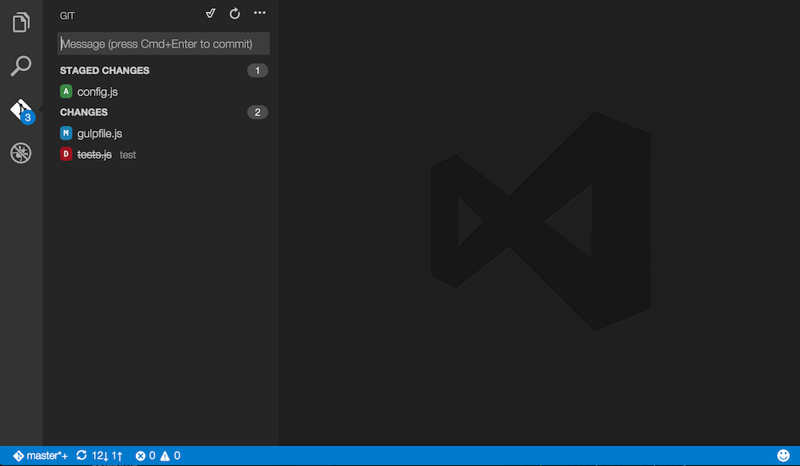
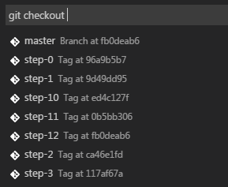
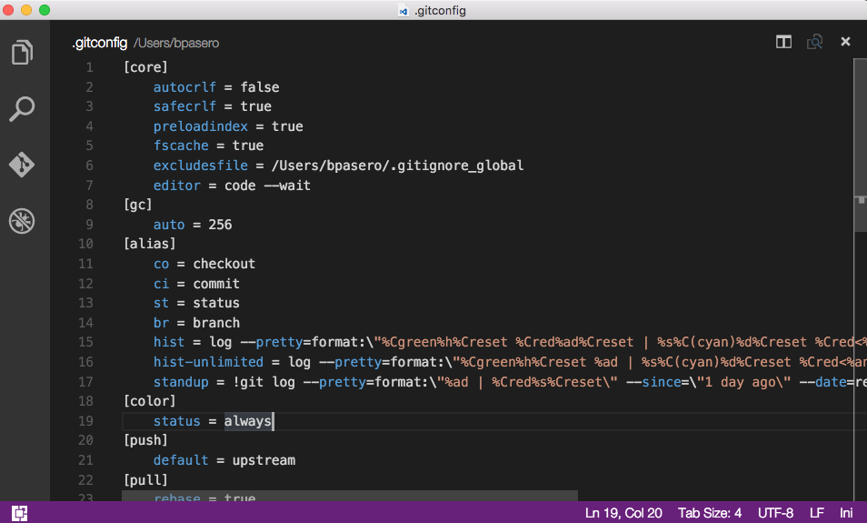

Visual Studio Code は Git を統合してサポートしています。これは開発している間、コミット管理するための優れた選択肢になります。
Note: VS Code は PC にインストールされた Git を利用します。ですから機能を使えるように install Git を入手してください。なお、少なくともバージョン
2.0.0以上をインストールします。Tip: VS Code は Git レポジストリでも大きな効果を発揮します。もし Git のプライベートホストを持っていない場合は、無料の Visual Studio Team Services をぜひ活用してください。Click here to sign-up
概要

画像左側の Git アイコンは現在のリポジトリにある変更の数表示します。これをクリックすると、次のような詳細を表示します:
ステージングしていない変更, ステージングした変更, 未解決の競合マージ
各項目をクリックすることで変更したファイル内の詳細を表示します。ステージングしていない変更は、右のエディタでもファイル編集できることに留意してください。
(編集メモ: ステージングしていても編集できているのでは
また VS Code の左下にはレポジストリの状態を示すインジゲーターがあります。状態として 現在のブランチ, dirty indicators そして incoming and outgoing commits を示します。ブランチからチェックアウトするには、このボタンを押して リストから任意の Git reference を選択してください。
Tip: Git リポジトリのサブディレクトリを VS Code で開いた場合でも Git は通常通り動作し、リポジトリ内のすべての変更を表示します。ただし現在のワークスペース外ファイル変更は、それを示すツールチップと共に表示します。
Git ステータスバーの操作
チェックアウトしたブランチが上流ブランチに設定されている場合、ブランチインジゲーターの隣に同期ボタンを表示します。

上流ブランチが設定されておらず Git リポジトリがリモートに設定されている場合 パブリッシュ ボタンを有効にします。これにより、現在のブランチをリモートに公開します。

コミット
ステージングとステージング解除 はファイルのコンテキスト操作か、ドラッグアンドドロップによって行うことができます。
これをコミットするには、上部にあるテキストボックスにコミットメッセージを入力して Ctrl+Enter (Mac: ⌘+Enter) を押します。一部変更をステージしたなら、それらの変更のみをコミットしますし、そうでない場合はすべての変更をコミットします。
私たちは段階的なコミット方法が素晴らしいワークフローであることを知っています。例えば先ほどの画像で config.js だけがコミットに含まれています。次に、連続したコミット操作によって vinyl-zip.js tests.js の両方を別々にコミットすることでしょう。
(編集メモ: 原文の意味がくみ取れず直訳
より具体的なコミット操作は Git ビュー上部の ... メニューで確認できます。
ブランチとタグ
Quick Open を使用して VS Code 内でブランチを作成およびチェックアウトすることができます。⌘P (Windows, Linux Ctrl+P) を押して git と スペース を入力します。これによって以下を表示します:

checkout と入力して Space をもう一度押せば、現在のレポジストリ内すべてのブランチやタグを含むドロップダウンを表示します。

git branch コマンドを使用することで、すぐに新しいブランチを作成できます。VS Code では新しいブランチ名を入力するだけで、 ブランチを作成しそれに切り替えてくれます。
リモート
チェックアウトしたブランチが、リモートで上流リンクを持っているなら、 VS Code は プッシュ, プル, 同期 の便利な操作を可能にします(sync は push のあと pull)。... メニュー でこれら操作を確認できます。
Tip: VS Code がその都度 Git リモートに認証情報を問い合わせるのを避けるために、 set up a credential helper を設定するべきです。これを設定したくない場合は
git.autofetch設定で自動フェチを無効にすることを検討する必要があります。
ガターインジケーター
Git リポジトリのフォルダを開いて編集に取り組み始めると、 VS Code は便利な注釈ガターと概要ルーラーを追加します。
- 赤の三角 : 削除された行
- 緑のバー : 追加された行
- 青のバー : 変更された行

マージの競合

競合は VS Code によって認識できますので、マーカー提供して解決の手伝いをしようとします。解決したなら競合するファイルをステージングして、変更をコミットしてください。
差分表示
私たちの Git ツールは VS Code 内で差分表示をサポートしています。

Tip: エクスプローラーか OPEN EDITORS リストで1つめのファイルを右クリックして変更を開くを選択します。その後2つ目のファイルを同じように選択することで、2つのファイルを比較することができます。あるいは、⇧⌘P (Windows, Linux Ctrl+Shift+P) を押して File: Compare Active File With… を選択して以前開いたファイルを表示することでも可能です。
Git 出力ウィンドウ
VS Code がどのように Git を使用しているのか見ることができます。何か変なことが起きている場合や、単に好奇心を刺激したいとき便利です :)
Git 出力ウィンドウを表示するには 表示 > 出力 を表示してドロップダウンから Git を選択します。
(編集メモ: toggle outputはoutputに変更されたが原文がそのあと更新されていない
リポジトリの初期化
ワークスペースが Git の管理下にない場合は Initialise git repository コマンドを利用して簡単に Git リポジトリを作成できます。(編集メモ:InitialiseがInitializeのスペルミスとしか思えない)VS Code が既存の Git リポジトリを検出しない場合 「このワークスペースはまだ Git ソース管理下にありません。」を表示して、Initialize git repository コマンドを利用可能にします。
Initialize git repository を実行すると Git レポジストリに必要なメタデータファイルを作成して、ワークスペースファイルをステージされていない変更として表示します。
Git パッチ/差分 モード
コマンドラインから VS Code を実行する場合、現在のインスタンスを閉じるまでコマンド待機する --wait 引数を設定できます。これを利用することで Git 外部エディタに VS Code を設定することができます。
実行手順:
- コマンドラインで
code --helpを実行できることを確認してください。- ヘルプを表示しない場合は、次を確認します
- Mac: コマンドパレット から Shell Command: Install ‘Code’ command in path を選択
- Windows: インストール時に Add to PATH を選択
- Linux: インストールを新しい .deb か .rpm パッケージで行ったか確認
2.コマンドラインからgit config --global core.editor "code --wait"を実行してください。
- ヘルプを表示しない場合は、次を確認します
git config --global -e を実行して Git を設定するエディターに VS Code を使用できます。

Diff ツールとして VS Code を使うには Git の設定に次を追加します。
|
これは VS Code が受け取れる --diff オプションを活用して、2つのファイルを並べて比較します。
VS Code をエディタとして使用できる例を以下に示します:
git rebase HEAD~3 -i- インタラクティブなリベースを行うgit commit- コミットメッセージに使うgit add -p- e によるインタラクティブな追加を行うgit difftool <commit>^ <commit>- 差分エディターとして使う
次のステップ
Intro Video - Git Version Control - An introductory video providing an overview of VS Code Git support- Editing Evolved - Lint, IntelliSense, Lightbulbs, Peek 及び 定義への移動
- Debugging - VS Code が本当に輝く
- Tasks - task を Gulp, Grunt, Jake で実行する。エラーと警告の表示
- Customization - theme, setting, keyboard binding のカスタマイズ
よくある質問
Q: ねぇ レポを初期化したのに ... メニューはグレーのまま。どうなっているの?
A: プッシュ, プル, 同期 するには Git の origin を設定する必要があります。ホストから URL を取得したのち少しのコマンドライン操作をして Git 設定に URL を追加してください。例えば Visual Studio Team Services の場合:
|
Q: Git の代わりに Team Foundation version control (TFVC) を使用しています。何をすべきですか?
A: Team Foundation のコマンドラインツールを使用してください。
- クラスプラットフォームを使う場合: Cross-Platform Command-Line Client Beginner’s Guide
- Windows の場合: Use Team Foundation version control commands
Q: なぜプル, プッシュ, 同期が終わりませんか?
これは大抵 Git に認証情報がなく、資格情報プロンプトを取得していないことを意味しています。
VS Code なしで認証情報を登録して、リモートサーバーからプルとプッシュするには credential helper を設定します
Q: 2段階認証を登録した Team Services アカウントで Git サインインするにはどうすればいいですか?
A: Git credential helpers を使います。こちらからダウンロードしてください。
Git Credential Manager for Mac and Linux
Git Credential Manager for Windows.
Q: Visual Studioコードを使用して、膨大な数のファイルがあるフォルダのGitリポジトリを誤って初期化しました。それによって VS Code は反応しないかハングします。どうすればいいですか?
A: まず VS Code 終了し、コマンドプロントで次を実行します
|
これは VS Code を新しいウィンドウで開きます。
次に(意図しないレポジストリの初期化を削除したいと仮定し)、レポを初期化した大きなフォルダ内の .git サブフォルダを探して削除します。なお .git は隠しフォルダなのでこれを表示する必要があります。例えば Windows のコマンドプロンプトで dir .git /ah を実行すると、特定のフォルダ内の .git という名前の隠しフォルダを表示できます。初期フォルダをどこに作成したかわからない場合は、ルートフォルダで dir .git /ah /s を実行してサブフォルダを含む .git フォルダを表示します。
Q: GitHub Desktop をインストールしていますが VS Code はこの git を無視します
A: VS Code は git.exe が PATH ($PATH on Mac or Linux) にあることを期待します。ですが GitHub Desktop は独自に git バイナリを内包し、 git.exe を PATH に登録しません。
次のいずれかを実行します:
PATHにgit.exeを登録して VS Code を再起動するgit.path設定 でgit.exeの場所を設定する
GitHub Desktop for win の場合、通常 git.exe は C:\Users\USERNAME\AppData\Local\GitHub\PortableGit_COMMITID\ming32\bin にあります。AppData\Local\GitHub で git.exe を検索すると、バイナリが見つかるはずです。
git-scm からGitをインストールすることもできますが、GitHub Desktop とは干渉しません。